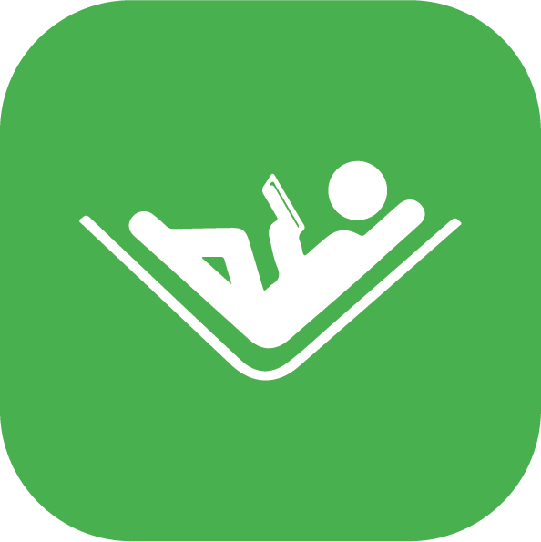
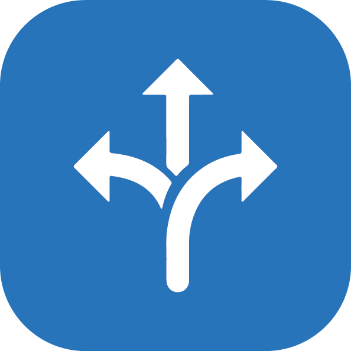

Profil Lembaga
Tentang PKBM Teras Ilmu
Homeschooling PKBM Teras Ilmu merupakan lembaga pendidikan nonformal yang menyediakan layanan pembelajaran dengan pendekatan yang fleksibel, personal, dan berbasis komunitas. Lembaga ini hadir sebagai alternatif pendidikan bagi peserta didik yang membutuhkan lingkungan belajar yang nyaman, menyenangkan, serta mampu menyesuaikan proses pembelajaran dengan potensi dan kebutuhan setiap individu.
Berada di bawah naungan Yayasan Persada Bandung, PKBM Teras Ilmu telah memiliki izin operasional resmi dari Dinas Pendidikan Kota Bandung dan menyelenggarakan berbagai layanan pendidikan, meliputi Program Kesetaraan Paket A, Paket B, Paket C, layanan homeschooling, Tahfidz Al-Qur'an, Taman Bacaan Masyarakat (TBM), serta berbagai kegiatan pengembangan karakter..
Dalam proses pembelajaran, PKBM Teras Ilmu mengedepankan hubungan yang dekat antara pendidik dan peserta didik sehingga tercipta suasana belajar yang lebih komunikatif, nyaman, dan tidak terlalu formal. Selain berfokus pada pencapaian akademik, pembelajaran juga diarahkan untuk mengembangkan karakter, kreativitas, kemampuan sosial, serta menanamkan nilai-nilai Islami dalam kehidupan sehari-hari.
Dengan mengusung semangat "Belajar Nyaman, Tumbuh Maksimal", PKBM Teras Ilmu berkomitmen menjadi ruang belajar yang mendukung setiap peserta didik untuk berkembang sesuai potensi terbaiknya dalam lingkungan yang aman, hangat, dan penuh inspirasi.
VISI
Mewujudkan lingkungan belajar yang nyaman, fleksibel, dan berkualitas untuk mengembangkan potensi peserta didik secara optimal melalui pembelajaran berbasis karakter, komunitas, dan nilai-nilai Islami.
MISI
- Menyelenggarakan pembelajaran yang fleksibel sesuai kebutuhan peserta didik.
- Memberikan pendampingan belajar secara personal untuk mengoptimalkan potensi setiap anak.
- Mengembangkan karakter, kreativitas, dan kemampuan sosial melalui pembelajaran berbasis pengalaman.
- Menanamkan nilai-nilai Islami sebagai landasan pembentukan akhlak dan karakter peserta didik.
- Menciptakan lingkungan belajar yang nyaman, aman, dan menyenangkan.
- Membangun kolaborasi yang baik antara sekolah, orang tua, dan masyarakat dalam mendukung perkembangan peserta didik.

NYAMAN
Lingkungan belajar yang aman, nyaman, dan mendukung perkembangan setiap anak.

FLEKSIBEL
Waktu belajar menyesuaikan kebutuhan keluarga.

PRIBADI
Pendampingan lebih dekat sesuai potensi setiap anak.

BERBASIS KOMUNITAS
Belajar bersama dalam lingkungan yang mendukung.

NILAI ISLAMI
Pembelajaran berlandaskan Al-Qur'an & sunnah.